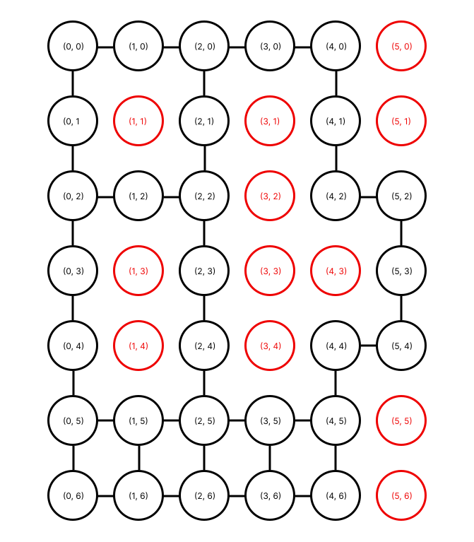
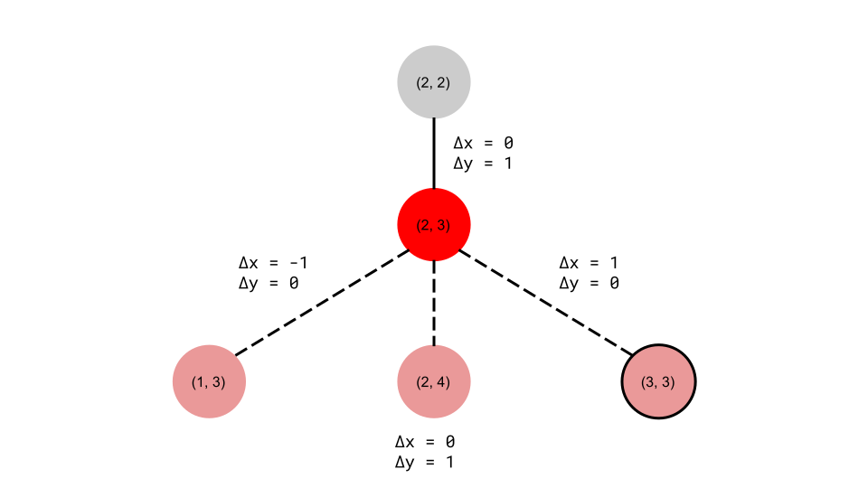

Overview:
The first step in our path planning is converting a map of our road to a representation that we can
run path planning on. We pass in a list representing our grid, where a 1 means a square is open and 0
means we cannot go there. This gets converted to a graph, where each habitable square is a node, and
there are edges in between adjacent nodes. In addition, we pass in a list of the AprilTags and their
locations. This is what that looks like:

A representation of the graph of our grid
Once we have a graph representation, we can run our path planning algorithm to calculate a list of
the nodes we need to traverse. We can run this as many times as we want to generate as long a path as
desired. Once we have a complete path, we then run a self-designed algorithm to generate instructions
for the robot. The instructions tell the robot which way to turn at intersections.
Path-Planning Algorithm
We used the A* algorithm to plan the path from point to point. The A* algorithm is a more efficient
version of Dijkstra’s algorithm, which is a common shortest path algorithm. Dijkstra’s algorithm
requires calculating the distance from the start node to every other node. In some implementations
it stops once it reaches the end node, but it does not prioritize any node over any other node.
The A* algorithm, however, calculates only the shortest path from the start node to the end, and uses
some kind of metric to determine which nodes are the most likely. The metric we used was the Euclidean
distance from a node to the goal.
One iteration of our A* algorithm goes as follows:
- Pop the first node off the list of open nodes. Because we’ve sorted it, this node will have the
shortest estimated distance to the destination. This is part of what makes A* so useful.
- If the node is the end node, we’re done! Otherwise…
- Find all the nodes adjacent to the current node
- For each adjacent node:
- Make sure we haven’t seen it before
- Set the current node to be the parent of this one
- Check if this node is the end. If it is, we’re done! Otherwise…
- Estimate the distance from this node to the end
- If it’s not already in our list to check from, add it
-
Add the current node to the set of nodes we’ve already seen. This prevents us from processing
nodes multiple times
-
Sort the list of open nodes by estimated distance to the destination This means next time we pop
a node off the list, it’s the one we think will get us there fastest.
Once we’ve reached the destination, we trace from the end node back up to its parent node, from that
node to its parent node, and so on until we reach the start node, which has no parent. Alternatively,
if we process all the nodes and do not reach our destination, we know there is no path available and
we throw an error.
Instruction Algorithm
Once we have a path, we need to generate instructions for the robot. We will know if a decision
needs to be made if one of the nodes we are traversing has an AprilTag associated with it. This
indicates an intersection. In order to know what to do at the intersection, we designed our own
algorithm. The intuition is this:
If we are currently at (2, 3), shown in red below, and have just come from (2, 2), shown in grey
below, then our x coordinate has not changed, but our y coordinate has increased by one, as indicated
by the deltas in the diagram. This means that we were traveling in the +y direction.

The red node represents our current position, the grey node represents our
previous position, and the pink nodes represent our three possible options.
The circled node is our planned destination.
In this case, we have three possible paths - left, right, or straight. If our next node is (2, 4),
our delta x and y would not change. In this case that means delta x would still be 0 and delta y would
still be 1. Since our deltas are the same as the previous node, we can tell that we want to go straight.
If our next node were (1, 3), we would want to turn right. We can tell this because our x and y have
switched from the previous node - now delta y is 0, which means we are going a different direction.
Delta x being -1 indicates that we need to travel in the -x direction, so we need to turn left.
In this diagram, our next node is (3, 3), as indicated by the outline. Again, we can tell that we need
to change direction because delta y is now 0 and delta x is not. This time, delta x is positive, so we
want to travel in the +x direction. In this case, that means turning right.
The final piece of this puzzle is this: if we are traveling in the +y direction (down), then to
travel in the -x direction we need to turn right. However, if we happened to approach this same
intersection from the other direction, we would be traveling in the -y direction, and would need to
turn left to travel in the -x direction. With this, we can generalize our solution to work for all
squares on the grid traveling in any direction. We generate the instruction ‘left’, ‘right’ or
‘straight’, and associate it with the AprilTag that the robot should look for to perform this action.